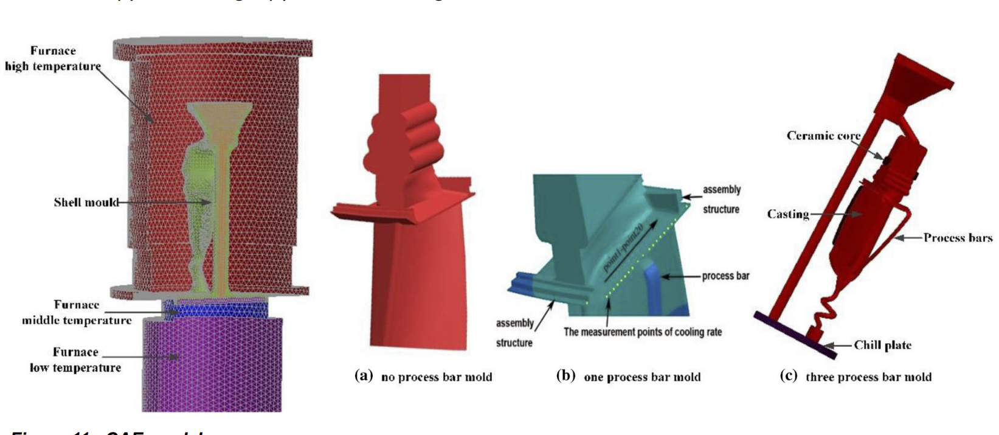

|
Bujingda Zheng
bzchb@umsystem.edu
I am currently a Ph.D candidate in
Advanced & Artificial intelligence Manufacturing Lab
under the direction of Prof. Jian Lin (Javen)
at University of Missouri .
I recieved Bachelor of Engineering Degree in Aircraft manufacturing Engineering from the NorthWestern Polytechnical University in 2016, and
Master of Engineering degree in Mechanical Engineering from the University of Melbourne in 2018, and a Minor in statistics in the University of
Missouri in 2022.
My research focuses on Robotics, Hybrid manufacturing and Artificial intelligence.
Email /
Google Scholar /
LinkedIn /
|

|
|
1.PhD Research projects
My PhD research focus on artificial intelligence, hybrid manufacturing, robotics and control.
|

|
Presentation: 5-axis freeform electronics fabrication via laser induction.
Bujingda Zheng, and Jian Lin
ASME IDETC-CIE 2023.
|

|
Direct Freeform Laser Fabrication of 3D Conformable Electronics.
Bujingda Zheng, Ganggang Zhao, Zheng Yan, Yunchao Xie and
Jian Lin
Advanced Functional Materials 2022.
pdf & supporting videos /
|

|
An autonomous robot for shell and tube heat exchanger inspection.
Bujingda Zheng, Jheng-Wun Su, Yunchao Xie, Jonathan Miles, Hong Wang, Wenxin Gao, Ming Xin and
Jian Lin
Journal of field robotics 2022.
pdf & supporting videos /
|
|
|
A photocured Bio-based shape memory thermoplastics for reversible wet adhesion.
Y Wu, C Su, S Wang, B Zheng, A Mahjoubnia, K Sattari, H Zhang, J Meister, G Huang and J Lin
Chemical Engineering Journal 2023.
|
|
|
Accelerate synthesis of metal–organic frameworks by a robotic platform and bayesian optimization.
Y Xie, C Zhang, H Deng, B Zheng, J Su, K Shutt and J Lin
ACS Applied Materials & Interfaces 2021.
|
|

|
Control of edge plate stray grain of single-crystal turbine blade by using process bar method.
F Qiu, K Bu, B Zheng, and G Tian
International Journal of Metalcasting 2020,
|
|
2.MS research and case study projects
My MS research includes computer vision, robotics design and control, statistics and numerical simulation.
|
|
|
- Object tracking based on Harris feature and Optical flow calculation.
ECE8690 Computer vision, project, 2022.
(Code)
|

|
- Positioning control of mecanum-wheeled platform.
Case study of 6-DOF positioning enabled by Fiducial marker and implementation, 2022.
|

|
- Gesture recognition enabled by a 7-by-7 LDR matrix.
Case study of AI model implementation on arduino and light dependent resistor (LDR) cross-bar matrix data readout circuit, 2021.
(Code)
|

|
- Hardware and control development of 3D magnetic field for ferrofluid.
Magnetic field control case study and implementation, 2020.
|

|
- Real-time automated game player.
Computer vision Hough transform case study and implementation, hardware controlled by arduino, image-processing via MATLAB, 2019.
|

|
- Mechanical design and control design of a 3-DOF thrust vectoring nozzle.
Parallel mechanism kinematics case study and implementation, 2019.
|

|
- Control design of a momentum wheel based inverted pendulum.
PID algorithm case study and implementation, 2018.
(Code)
|

|
- CFD simulation of airflow over perforated plate (bubble column).
Capstone project of MS degree, University of Melbourne, 2018.
|

|
- Numerical simulation of shallow water equation with parallel computing.
MCEN90031, High performance computing, University of Melbourne, 2017.
(Code)
|
|
|
- Stewart platform controlled by arduino, simulated by MATLAB.
Parallel mechanism kinematics case study and implementation, 2017.
(Code)
|
| | |